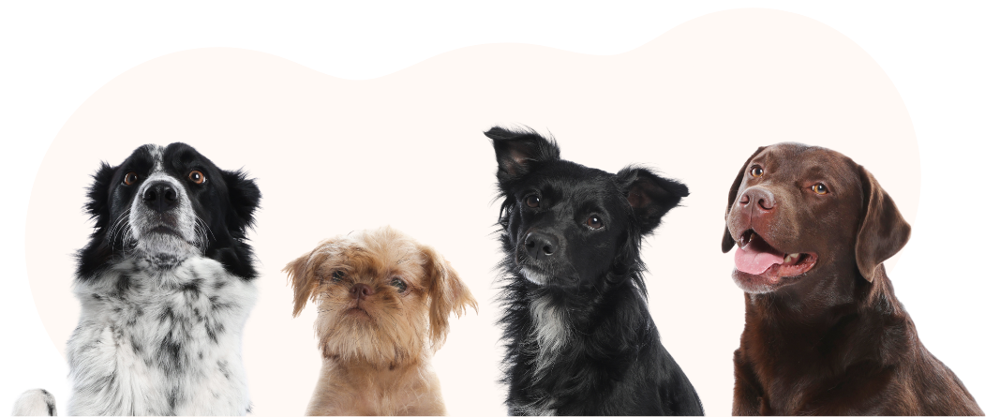
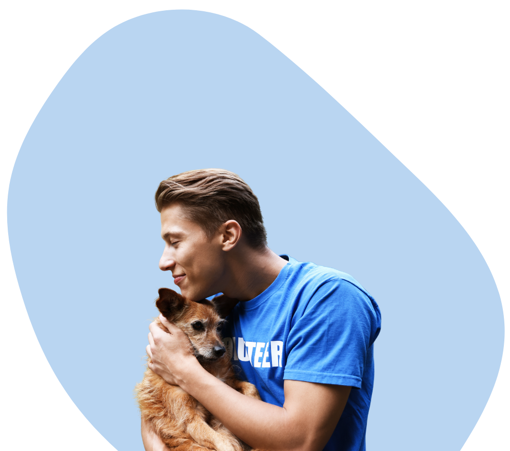
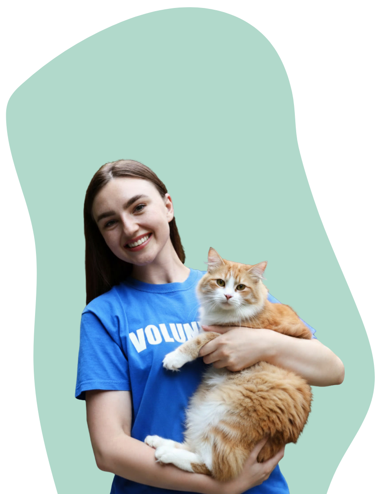

A Patas é uma plataforma dedicada a conectar animais resgatados a famílias que desejam adotar com amor e responsabilidade. Nosso propósito é dar visibilidade a cães e gatos que aguardam por um recomeço, facilitando o encontro entre quem quer ajudar e quem precisa de um lar.
Trabalhamos para tornar a adoção mais acessível e consciente, promovendo sempre o respeito à vida animal. Acreditamos que todo animal carrega uma história de superação e merece uma segunda chance genuína de ser feliz..



A Paws é formada por voluntários, protetores independentes e parceiros que se dedicam ao cuidado dos animais resgatados. Eles atuam no resgate, alimentação e acompanhamento, garantindo que cada animal esteja preparado para encontrar um novo lar com segurança e responsabilidade.
Todo o trabalho é feito com carinho, empatia e compromisso com o bem-estar animal. Nosso objetivo é dar uma nova chance e um futuro melhor para cada animal.
Estamos comprometidos em unir animais a famílias amorosas, cuidando de cada etapa com respeito, empatia e muita dedicação.
Promover a adoção consciente de cães e gatos.
Dar visibilidade a animais que buscam um lar.
Facilitar o encontro entre pets e adotantes.
Garantir um futuro seguro e digno para cães e gatos.
Cada adoção representa uma nova chance de felicidade para um animal. Graças ao trabalho de voluntários, parceiros e adotantes, já transformamos muitas histórias.
Animais adotados
Voluntários
Parceiros
Taxa de adoções bem-sucedidas